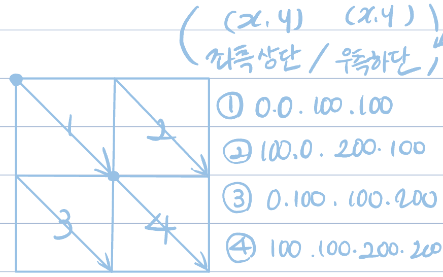

HTML link
figure
- <figure> : image caption
- <figcaption> : caption 내용
- Ex. <figure>
<figcaption>내용<img~속성>
</figure>
image map
(usemap = "#link") - image map
- <map> : 맵 만들기
- <area> : 구역 나누기
Ex. <div><img src="~" usemap"#링크"></div>
<map name="링크">
<area shape="rect" coords="(좌측상단),(우측하단)" href="#link" alt="제목"</div>
</map>
* img = inline 요소이므로 div(블럭)으로 감싸줌

name anchor
- ul>(li>a)*3 = (li>a) 3번 반복
Ex. p>a
→ <p><a href="#link">내용</a></p>
→ <h1 id="link">헤드라인</h1>
⇒ p에 '내용' 누르면 '헤드라인'으로 가고싶다면 [#link]=[link]
CSS 문법
CSS 기본 선택자
h1{color:blue; font-size:12px}
⇒ Selector{Property:Value Property:Value;}
- 클래스 선택자(Class Selector)
- 아이디 선택자(ID Selector)
HTML 문서 내 작성
작성 방법
- <style> = internal
- <link> = 외부 링크
- inline 방식 = 태그 내 작성
- import 방식 = 미생성 문서 이름에 cmd+click → create new file
- - @imoprt url(파일명.css) = css 문서 내 css 불러오기
- - <div> = 블럭 의미
- - <ul style="list-style-type:none;">" = 리스트지만 구분점 없어짐